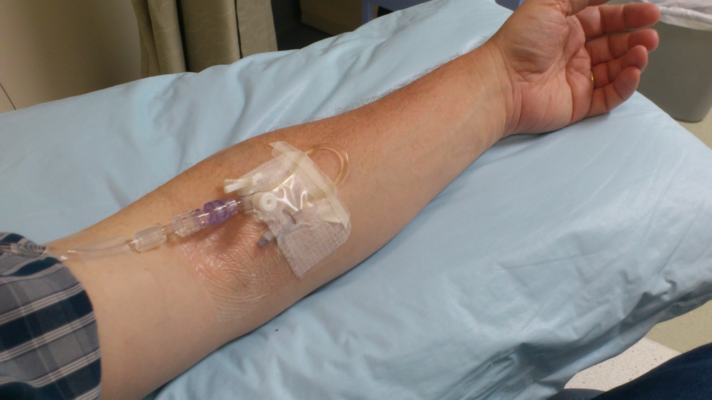

IVIG ou plasma · corticoide NÃO · remielinização
Muitos querem corticoide "anti-inflamatório" ou esperam o paciente andar no dia seguinte. Os dois estão errados.
Escolher entre IVIG e plasmaférese, rejeitar corticoide e entender o tempo da remielinização.
IVIG ou plasmaférese
Tratamento: escolher entre imunoglobulina (IVIG) ou plasmaférese. Pode-se escolher qualquer um dos dois: a curto e a longo prazo o benefício é idêntico — "cara ou coroa" em eficácia.
Na prática, prefere-se a imunoglobulina porque é mais fácil de aplicar (via endovenosa). A plasmaférese é operacionalmente semelhante a uma hemodiálise: exige equipamento e equipe treinada. Por isso cai menos na prática.
| Opção | Benefício | Operacional |
|---|---|---|
| Imunoglobulina (IVIG) | Idêntico | Mais fácil (EV) → preferida na prática |
| Plasmaférese | Idêntico | Como hemodiálise · equipamento + equipe |
| Corticoide | Sem benefício · pode piorar | NÃO fazer |
Corticoide: não
Corticoide: não. Corticoide não tem benefício em Guillain-Barré e pode até piorar.
Não melhora no dia seguinte
Depois de IVIG ou plasmaférese, não se espera que o paciente melhore no dia seguinte (não "estava sem andar e anda amanhã"). O tratamento bloqueia o ataque imune: o objetivo imediato é que o paciente não piore mais. Depois do bloqueio, é preciso esperar a remielinização e o reajuste do neurônio. A recuperação pode demorar dias a semanas — não é imediata.
O importante é cortar a evolução da doença para não evoluir com insuficiência respiratória e ficar no CTI por tempo prolongado.
Fecho do caso João
O provável diagnóstico de João é síndrome de Guillain-Barré.
Por que importa na prática: corticoide "por via das dúvidas" e alta precoce com "volta se piorar" são os dois erros que a banca e a porta cobram.
Resumo operacional: IVIG ou plasma (iguais) · corticoide NÃO · bloqueia agora · remieliniza depois.

IVIG intravenous infusion via peripheral access (documented Intragam/IVIG therapy). Photo by Steve Brew, via Wikimedia Commons. Licensed under CC BY-SA 3.0. Source: https://commons.wikimedia.org/wiki/File:Intragam_Infusion.jpg
O que entra na veia e bloqueia o ataque
A IVIG não é "remédio para o nervo" — é imunomodulação. Os anticorpos infundidos saturam os receptores e desviam o ataque autoimune da bainha de mielina. O efeito não é imediato: o paciente não anda amanhã. Mas a progressão para. E sem progressão, o CTI não é necessário — ou é mais curto.
Uma vignette de prova — dengue → GBS — e as duas complicações que a banca quer.
Quiz
Q1. Sobre IVIG e plasmaférese no GBS:
Q2. Corticoide no Guillain-Barré:
Q3. Após IVIG, o objetivo imediato é: